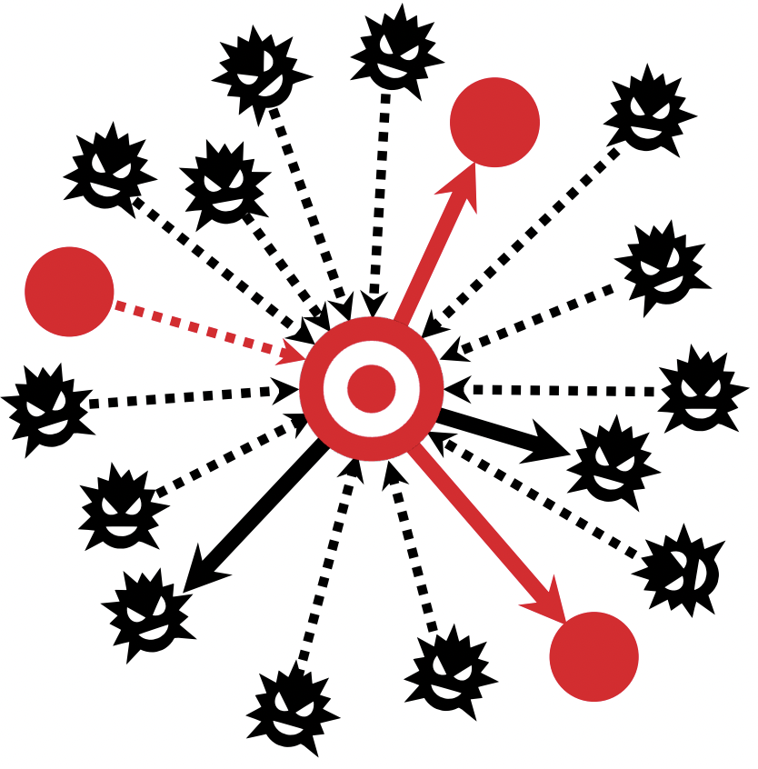
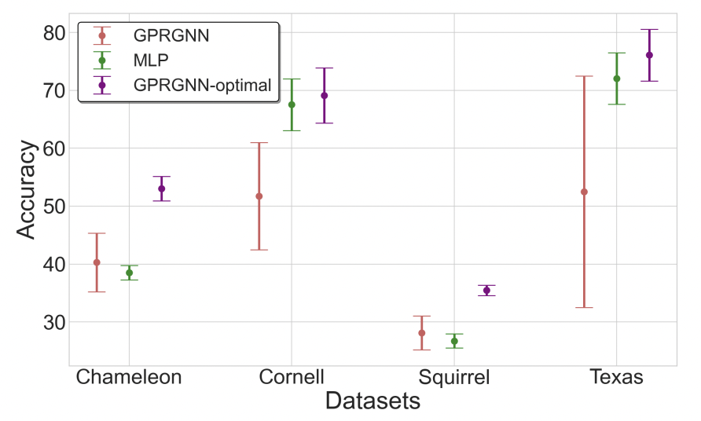
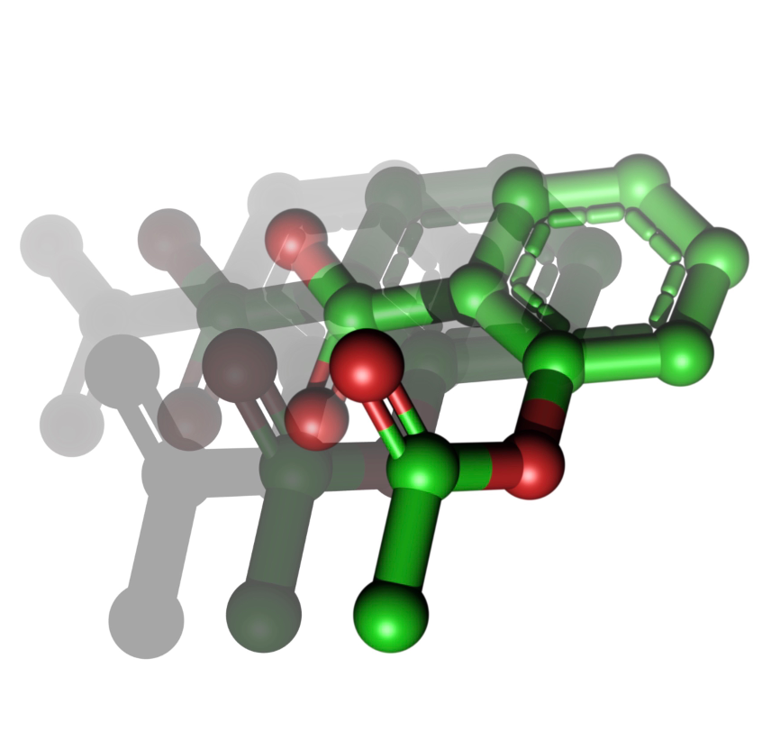
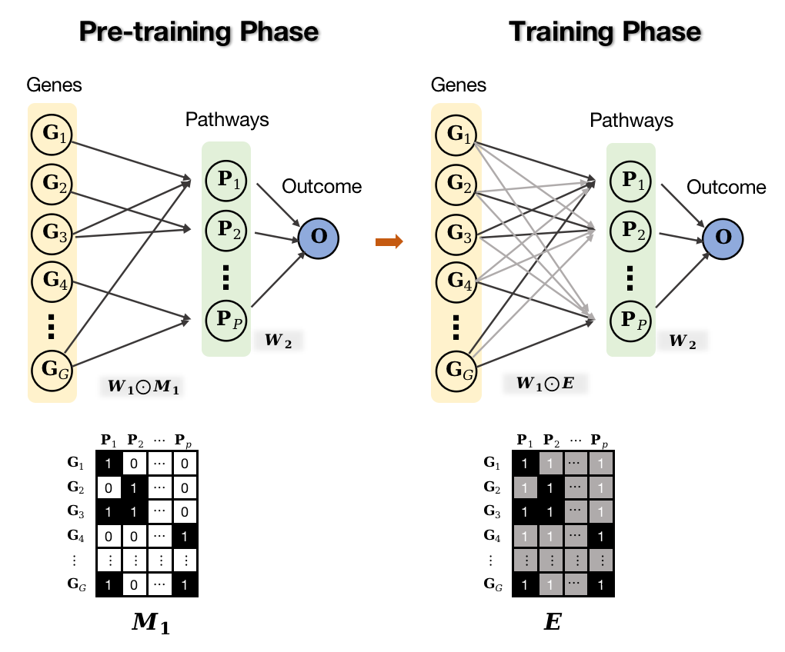
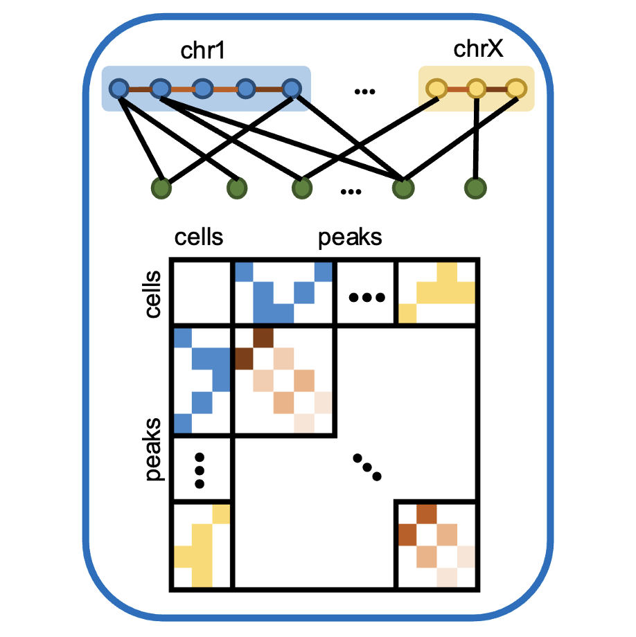
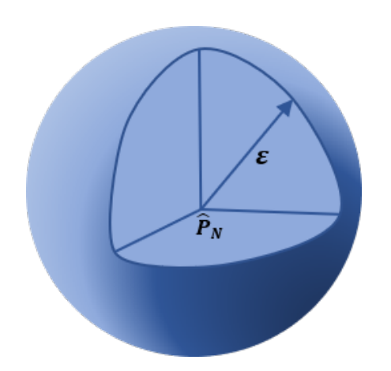
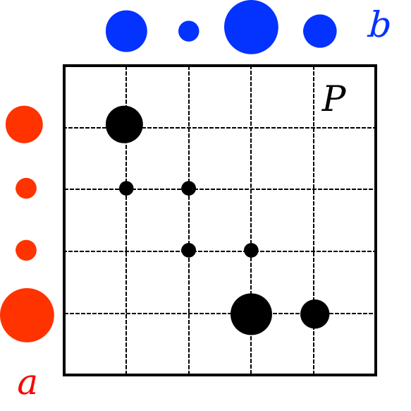
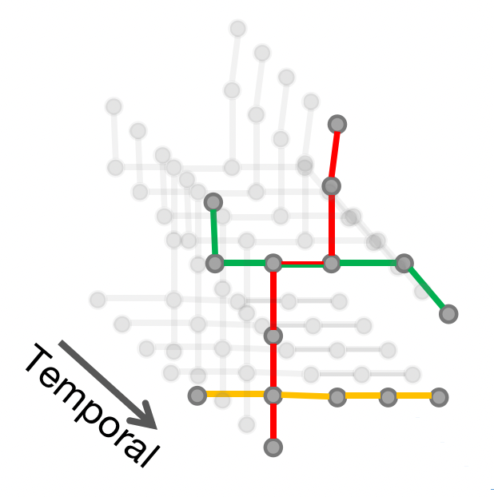
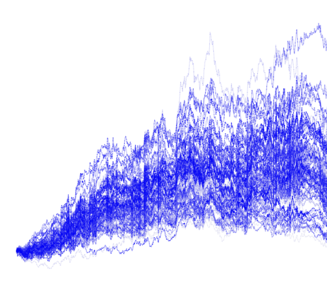
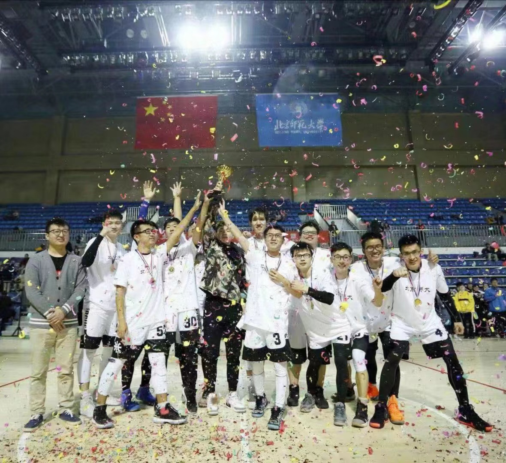

|
Research Interest
I'm interested in Graph Neural Networks, Optimal Transport, Optimization and Bioinformatics.
Graph Neural Networks
Robustness on Graphs, Spatial-Temporal GNNs, Equivariant Geometric GNNs
Optimal Transport (Wassersetin Metric)
Approximation algorithms for OT , Wasserstein Distributionally Robust Optimization, OT in GANs, OT in bioinformatics
|
Machine Learning (GNNs, Interpretable ML)
|

|
Can Directed Graph Neural Networks be Adversarially Robust?
Zhichao Hou, Xitong Zhang, Wei Wang, Charu C. Aggarwal, Xiaorui Liu
Department of Computer Science, North Carolina State University
Preprint, 2023
Constructed a high-level directed message passing scheme for undirected GNNs, such as GCN, GAT and APPNP
Designed a novel directed adaptive attack to test the robustness of our model
Our directed MP scheme is significantly robust to graph adversarial attacks both in both transferable and adaptive sense
|
|

|
Automated Polynomial Filter Learning for Graph Neural Networks
Wendi Yu, Zhichao Hou, Xiaorui Liu
Department of Computer Science, North Carolina State University
Preprint, 2023
Investigated the potential of graph polynomial filter learning
Proposed Auto-Polynomial to enhance the performance and generalization of GNNs
Evaluated our proposed framework on both homophilic and heterophilic graphs
|
|

|
Equivariant Spatio-Temporal Attentive Graph Networks for
Physical Dynamics Simulatio
Zhichao Hou, Jirui Yuan, Wenbing Huang
Institute for AI Industry Research, Tsinghua University
AI Lab, Tencent
Preprint, 2023
Designed a novel Equivariant Discrete Fourier Transform (EDFT) to extract periodic patt
Leveraged equivariant geometric GNNs capture the spatial dependencies in molecular graph
Constructed a novel equivariant attention-based encoder to model the temporal dynamics
|
|

|
PathExpSurv: Pathway Expansion for Explainable
Survival Analysis and Disease Gene Discovery
Zhichao Hou, Jiacheng Leng, Jiating Yu, Zheng Xia, Lingyun Wu
Operations Research Laboratory, Academy of Mathematics and Systems Science
Computational Biology Laboratory, Oregon Health and Science University
Bioinformatics (Under Review), 2022
PDF / Code
Two-phase training: pretrained with prior info and trained with penalty out of prior
Pathways Expansion: expanded the prior pathways based on trained weights
Downstream analysis: performed single-gene survival analysis, enrichment analysis and recoverability testing for the expanded
pathways to do the disease drivers discovery
|
|

|
Single-Cell ATAC-seq analysis via Network Refinement
with peaks location information
Jiating Yu, Duanchen Sun, Zhichao Hou, Lingyun Wu
Operations Research Laboratory, Academy of Mathematics and Systems Science
Nature Methods (Under Review), 2022
PDF / Code
Constructed the relation matrix based on the cell-peak accessible relationships and peak-peak co-accessibility
Aggregated information with the Network Refinement
(NR) diffusion method
Leveraged SCARP to improve cell
clustering performance and reveal new significant
cell subpopulations
|
Optimal Transport
|

|
Wasserstein Distributionally Robust Optimization (WDRO)
Zhichao Hou, Lingyun Wu
Operations Research Laboratory, Academy of Mathematics and Systems Science
Undergraduate Research, 2019
Studied intensively on WDRO in classical ML problems (classification, regression, MLE, MMSE)
WDRO achieved better generalization and robustness against in SVM, Gaussian MLE, KF
|
|

|
Approximation Algorithms in Optimal Transport Wasserstein Distance
Zhichao Hou, Li Cui
Computational Mathematics Laboratory, Beijing Normal University
Undergraduate Research, 2018
Studied Sinkhorn algorithm based on entropy regularization theory
Researched Gibbs-OT algorithm based on Boltzmann distribution
Implemented Sinkhorn and Gibbs-OT algorithm in mage registration problem
|
|

|
Spatial-Temporal Attentional GNN in Traffic Flow Prediction
Intelligent Transportation Department, Baidu
Internship, March 2022 - June 2022
Proposed Graph Learner to learn the dynamic graph structure from traffic flow data
Constructed STAGNN to capture the spatial and temporal dependencies of the traffic graph time series
Achieved 25% performance improvement comparing to Baidu official baseline
|
|

|
Financial Time Series Data Generation with SigCWAN
AI-Quant Ltd, Beijing
Internship, June 2021 - Septemper 2021
Got insight into the drawbacks of GAN & WGAN in data generation
Researched on SigCWGAN which leveraged path signature as a tool to improve WGAN
Achieved stable training process and the generated data passed six financial data tests
|
|

|
Champion of Mingyue Cup basketball match in BNU
First-class Scholarship of Beijing Normal University (3 consecutive year)
First-class Prize of National Mathematical Modeling Contest
Third-class Prize of National Mathematics Competition
Honorable Mention of MCM
|
|
{kind=link}